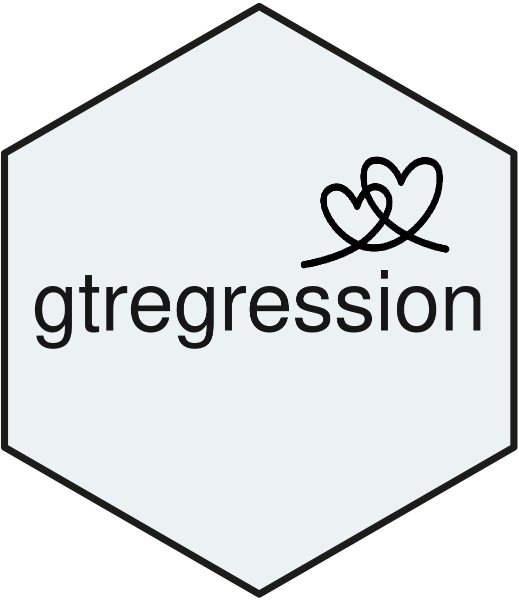

Introduction
The gtregression package provides a user-friendly
interface for generating publication-ready regression tables, performing
model diagnostics, visualizing results, and identifying confounders. It
is especially designed for beginner analysts, epidemiologists, and
public health professionals—particularly those in low- and middle-income
country (LMIC) settings—to promote the use of open-access tools in data
analytics. This vignette demonstrates how to use key functions of the
package.
Design Principles
The development of gtregression was driven by the need
to make R more approachable for those who find it intimidating or overly
technical. For many public health professionals, researchers, and
students in LMICs, regression modeling in R can feel fragmented and
difficult to interpret.
We intentionally rely on existing, well-tested packages — not because we can’t code them ourselves, but because it’s better for users to stand on stable ground. Our job is to smooth the path by:
- Wrapping complexity into clear function calls
- Minimising required parameters through smart defaults
- Offering layered outputs: readable summary + full technical object
- Reducing time-to-insight and time-to-publish
By justifying our dependencies as tools that serve the user, we maintain transparency while staying focused on enhancing their experience.
Load Example Data
We use the PimaIndiansDiabetes2 dataset:
data("PimaIndiansDiabetes2", package = "gtregression")
pima_data <- PimaIndiansDiabetes2 %>%
mutate(diabetes = ifelse(diabetes == "pos", 1, 0)) %>%
mutate(
bmi = case_when(mass < 25 ~ "Normal",
mass >= 25 & mass < 30 ~ "Overweight",
mass >= 30 ~ "Obese"),
bmi = factor(bmi, levels = c("Normal", "Overweight", "Obese")),
age_cat = case_when(age < 30 ~ "Young",
age >= 30 & age < 50 ~ "Middle-aged",
age >= 50 ~ "Older"),
age_cat = factor(age_cat, levels = c("Young", "Middle-aged", "Older"))
)Visualizing the Results
plot_reg_combine(
tbl_uni = uni_tbl,
tbl_multi = multi_tbl,
log_x = TRUE,
title_uni = "Unadjusted",
title_multi = "Adjusted"
)Identifying Confounders
identify_confounder(
data = pima_data,
outcome = "diabetes",
exposure = "bmi",
potential_confounder = c("age_cat"),
approach = "robpoisson"
)Stepwise Model Selection
model_selection <- select_models(
data = pima_data,
outcome = "diabetes",
exposures = c("bmi", "age_cat"),
approach = "robpoisson",
direction = "forward"
)
model_selection$results_tableConclusion
The gtregression package simplifies regression coding
and produces publication-ready tables with interpretation notes. It
enables beginners to explore a variety of regression models with ease,
transparency, and reproducibility. Explore the documentation for each
function to discover additional options and customization features.